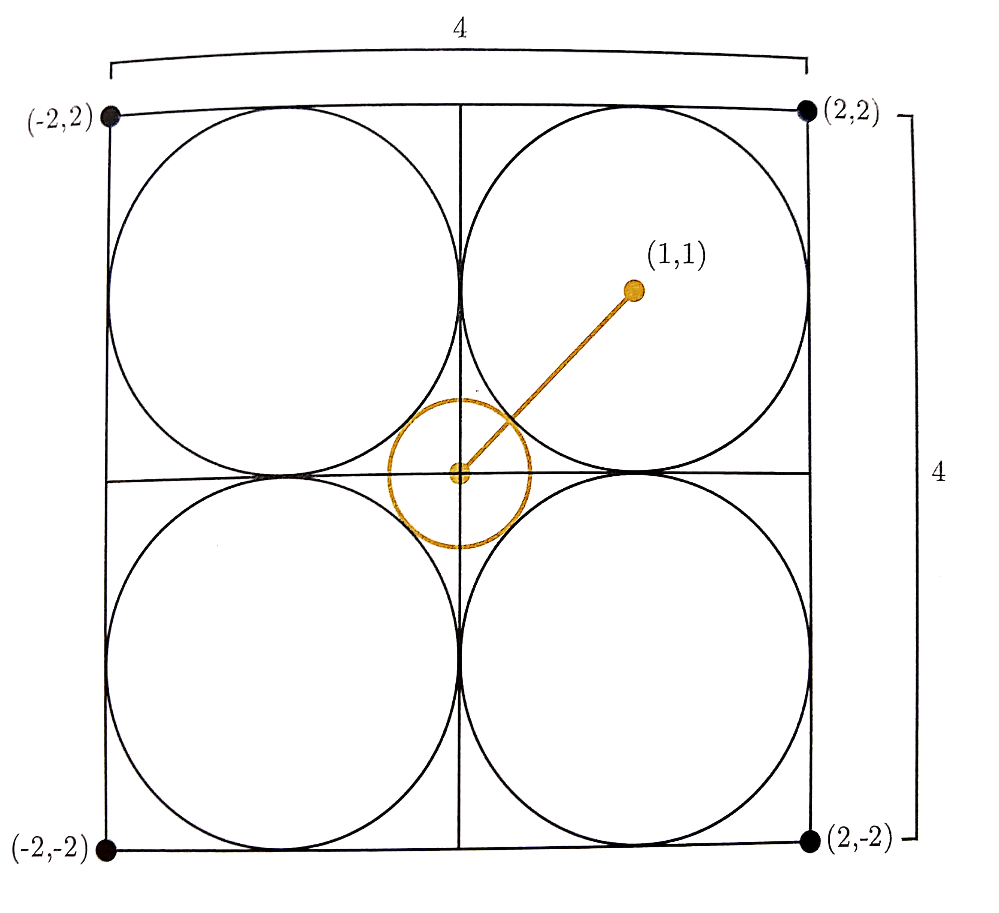

Advanced Machine Learning
07: Curse of Dimensionality
Schedule
| # | date | topic | description |
|---|---|---|---|
| 1 | 22-Aug-2022 | Introduction | |
| 2 | 24-Aug-2022 | Foundations of learning | |
| 3 | 29-Aug-2022 | PAC learnability | |
| 4 | 31-Aug-2022 | Linear algebra (recap) | hw1 released |
| 05-Sep-2022 | Holiday | ||
| 5 | 07-Sep-2022 | Linear learning models | |
| 6 | 12-Sep-2022 | Principal Component Analysis | project ideas |
| 7 | 14-Sep-2022 | Curse of Dimensionality | hw1 due |
| 8 | 19-Sep-2022 | Bayesian Decision Theory | hw2 release |
| 9 | 21-Sep-2022 | Parameter estimation: MLE | |
| 10 | 26-Sep-2022 | Parameter estimation: MAP & NB | finalize teams |
| 11 | 28-Sep-2022 | Logistic Regression | |
| 12 | 03-Oct-2022 | Kernel Density Estimation | |
| 13 | 05-Oct-2022 | Support Vector Machines | hw3, hw2 due |
| 10-Oct-2022 | * Mid-point projects checkpoint | * | |
| 12-Oct-2022 | * Midterm: Semester Midpoint | exam | |
| 14 | 17-Oct-2022 | Matrix Factorization | |
| 15 | 19-Oct-2022 | Stochastic Gradient Descent |
| # | date | topic | description |
|---|---|---|---|
| 16 | 24-Oct-2022 | k-means clustering | |
| 17 | 26-Oct-2022 | Expectation Maximization | hw4, hw3 due |
| 18 | 31-Oct-2022 | Automatic Differentiation | |
| 19 | 02-Nov-2022 | Nonlinear embedding approaches | |
| 20 | 07-Nov-2022 | Model comparison I | |
| 21 | 09-Nov-2022 | Model comparison II | hw5, hw4 due |
| 22 | 14-Nov-2022 | Model Calibration | |
| 23 | 16-Nov-2022 | Convolutional Neural Networks | |
| 21-Nov-2022 | Fall break | ||
| 23-Nov-2022 | Fall break | ||
| 24 | 28-Nov-2022 | Word Embedding | hw5 due |
| 30-Nov-2022 | Presentation and exam prep day | ||
| 02-Dec-2022 | * Project Final Presentations | * | |
| 07-Dec-2022 | * Project Final Presentations | * | |
| 12-Dec-2022 | * Final Exam | * | |
| 15-Dec-2022 | Grades due |
Outline of this lecture
- Curse of dimensionality
Curse of dimensionality
How much rind?
Generalized Pythagoras Theorem
$ D^2 = \sum_{i=1}^{n} x^2_{i} $Trapezoid rule
Stirling approximation for $n!$
- $\ln n! = \sum_{k=1}^n \ln k$
- $\int_1^n \ln x dx$
- $\int_1^n \ln x dx = n\ln n -n +1$
- $\int_1^n \ln x dx \sim {1 \over 2}\ln 1 + \ln 2 + \ln 3 + \dots + {1 \over 2}\ln n$
- $\sum_{k=1}^n \ln k \sim n\ln n - n + 1 + {1 \over 2}\ln n$
- $n! \sim Cn^ne^{-n}\sqrt{n}$
- $C = \sqrt{2\pi}$
- $n! \sim n^ne^{-n}\sqrt{2\pi n}$
Stirling approximation for $n!$
| $n$ | Stirling | True | Stirling/True |
|---|---|---|---|
| 1 | 0.92214 | 1 | 0.92214 |
| 2 | 1.91900 | 2 | 0.95950 |
| 3 | 5.83621 | 6 | 0.97270 |
| 4 | 23.50618 | 24 | 0.97942 |
| 5 | 118.01917 | 120 | 0.98349 |
| 6 | 710.07818 | 720 | 0.98622 |
| 7 | 4,980.3958 | 5,040 | 0.98817 |
| 8 | 39,902.3955 | 40,320 | 0.98964 |
| 9 | 359,536.87 | 362,880 | 0.99079 |
| 10 | 3,598,695.6 | 3,628,800 | 0.99170 |
$\Gamma$ (Gamma) function
- $\Gamma(n) = \displaystyle\int_0^{\infty} x^{n-1}e^{-x}dx$
- Integration by parts: $\int udv = uv - \int vdu$
- $u=x^{n-1}$, $dv = e^{-x}dx$, $du = (n-1)x^{n-2}dx$, $v = -e^{-x}$
- $\Gamma(n) = -e^{-x}x^{n-1} \displaystyle|_0^{\infty} + (n-1)\int_0^{\infty} x^{n-2}e^{-x}dx$
- $\Gamma(n) = (n-1)\Gamma(n-1)$
- $\Gamma(1) = 1$
- $\Gamma(n) = (n - 1)!$
$\Gamma({1 \over 2})$
- $\Gamma({1 \over 2}) = \displaystyle\int_0^{\infty} x^{-{1 \over 2}}e^{-x}dx$
- Set $x = t^2$, follows $dx = 2tdt$
- $\Gamma({1 \over 2}) = 2 \displaystyle\int_0^{\infty} e^{-t^2}dt = \displaystyle\int_{-\infty}^{\infty} e^{-t^2}dt$
- $\Gamma^2(\frac{1}{2}) = \displaystyle\int_{-\infty}^{\infty}\displaystyle\int_{-\infty}^{\infty} e^{-(x^2+y^2)dxdy}$
- $\Gamma^2(\frac{1}{2}) = \displaystyle\int_{0}^{2\pi}\int_{0}^{\infty} r e^{-r^2} dr d\theta$
- $\Gamma^2(\frac{1}{2}) = \pi $
- $\Gamma(\frac{1}{2}) = \sqrt{\pi} $
Hypersphere Volume
- $\mbox{volume} = C_n r^n$
- $C_1 = 2$, $C_2 = \pi$, $C_3 = \frac{4\pi}{3}$
- $\mbox{surface area} = \frac{dV_n(r)}{dr} = n C_n r^{n-1}$
- $\left(\frac{dV_n(r)}{dr}\right)dr = n C_n r^{n-1}dr$
- \begin{align} \Gamma^n\left(\frac{1}{2}\right) = \pi^{n/2} &= \displaystyle \int_0^{\infty} e^{-r^2} \left(\frac{dV_n(r)}{dr}\right)dr \\ & = \frac{nC_n}{2} \displaystyle \int_0^{\infty} e^{-t} t^{n/2-1}dt \\ & = \frac{nC_n}{2} \Gamma\left(\frac{n}{2}\right)\\ & = C_n \Gamma\left(\frac{n}{2} + 1\right) \end{align}
hyperSphere Volume
| Dimension $n$ | Coefficient $C_n$ | |
|---|---|---|
| 1 | 2 | = 2.0000... |
| 2 | $\pi$ | = 3.14159... |
| 3 | $4\pi/3$ | = 4.18879... |
| 4 | $\pi^2/2$ | =4.93480... |
| 5 | $8\pi^2/15$ | =5.26379... |
| 6 | $\pi^3/6$ | =5.16771... |
| 7 | $16\pi^3/105$ | =4.72477... |
| 8 | $\pi^4/24$ | =4.05871... |
| 9 | $32\pi^4/945$ | =3.29851... |
| 10 | $\pi^5/120$ | =2.55016... |
| $2k$ | $\pi^k/k!$ | $\to 0$ |
In a general hyperwatermelonsphere
\begin{align}
\frac{C_nr^n - C_nr^n(1-\epsilon)^n}{C_nr^n} &= 1 - (1-\epsilon)^n\\
\frac{V_{rind}}{V_{total}} &= 1 - (1 - r)^d
\end{align}
Fraction of volume
\[
\frac{V_{rind}}{V_{total}} = 1 - (1 - \epsilon)^D
\]
What volume fraction of a hyper-melon does the rind occupy if it takes up an $\epsilon$ fraction of its radius?
Gaussian distribution
\[
G({\bf x}) = \frac{1}{(2\pi)^{K/2} |{\bf C}|^{1/2}}
e^{-\frac{1}{2}{\bf x}^{\;{\rm
T}} {\bf C}^{-1} {\bf x}}
\]
What's the probability of a random sample falling on a radius $r$ "shell" around the mean?
What if the flesh isn't in the center?
Question: What is the probability of randomly hitting the flesh?
Local minima and multiple starts
blackboardLaw of cosines
Angles between vectors
- $\cos\theta = \frac{1}{\sqrt{n}} \to 0$ and $\theta \to \frac{\pi}{2}$
- $\cos\theta = \frac{\sum_{k=1}^n x_k y_k}{XY}$
- Draw vectors to two random points $(\pm 1, \pm 1, \pm 1. \dots, \pm 1)$
- $\cos\theta = \frac{\sum_{k=1}^n (\pm 1)}{n} \stackrel{a.s.}\to 0$, as $n \to \infty$
Angles between vectors
Probability of orthogonality
Estimating probability
Question: What's the minimum number of samples we need to estimate a $d$ dimensional density in a cube?
4x4 paradox
Alternative distances
Conditions on a metric
- $D(x,y) \ge 0$ (non-negative)
- $D(x,y) = 0$ iff $x=y$ (identity)
- $D(x,y) = D(y,x)$ (symmetry)
- $D(x,y) + D(y,z) \ge D(x,z)$ (triangle inequality)
Case study: an average human

Reading list
- p. 33 of "Pattern recognition and Machine Learning" by C. Bishop
- p. 22 of "The Elements of Statistical Learning" by T. Hastie, R. Tibshirani, and J. Friedman
- Chapter 9 of "The Art of Doing Science and Engineering: Learning to Learn" by R. Hamming